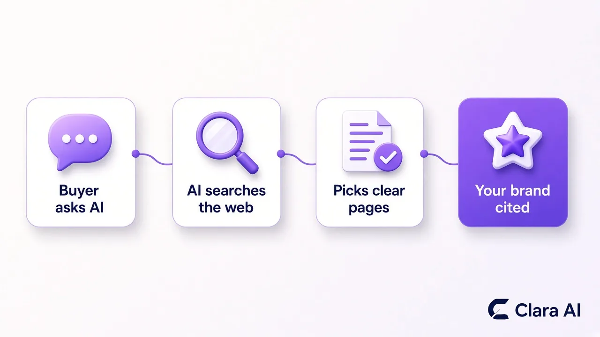

GEO, or generative engine optimization, is the work of getting your company named and quoted inside AI answers from tools like ChatGPT, Gemini, Perplexity and Google AI Overviews. SEO gets your page ranked on Google. GEO makes the same page easy for an AI to read, trust and cite when a buyer asks it who to hire.
We do this on our own site every day. claraai.tech grew organic sessions by +28% from 10–25 Oct vs 24 Sep–9 Oct 2026, with our AI SEO agent publishing one answer-first post a day. The same daily system runs our LinkedIn agent: for Haique Surfaces, as of 21 Oct 2026, it reached 345 prospects, 107 accepted (31%) and 14 replied.
B2B buyers used to type a few words into Google, open five tabs and compare vendors. Many now ask an AI tool a full question instead: "Which agencies can run LinkedIn outreach for a B2B company in India?" or "What is the best way to get leads from SEO without hiring a team?" The AI gives one answer and names a few companies.
If your company is not in that answer, you are not on the shortlist, and you never see the visit you lost. That is the real risk. It does not show up in your analytics as a drop; it just shows up as fewer enquiries than you expected.
Google itself now shows AI Overviews and AI Mode on many searches. Its own guide to AI features and your website says the same SEO basics apply: pages must be indexed, crawlable and genuinely helpful to be shown as a supporting link.

No AI company publishes the full recipe, but the pattern is clear from how these tools work. When a question needs fresh or specific information, the tool searches the web, reads the top pages it finds and builds its answer from the ones that are easiest to understand and look most trustworthy. Researchers who coined the term, in the paper GEO: Generative Engine Optimization, found that adding clear facts, quotes and sources to a page made it more likely to show up in AI answers.
In practice, AI tools tend to favour pages that:
They are not rivals. GEO is built on top of SEO. If Google can't find and rank your page, most AI tools won't find it either.
| SEO | GEO | |
|---|---|---|
| Goal | Rank on Google and get the click | Get named or quoted in an AI answer |
| Where buyers see you | Search results page | ChatGPT, Gemini, Perplexity, Google AI Overviews |
| What wins | Buyer keywords, strong pages, internal links, indexing | Direct answers, clear structure, dated proof, topic depth |
| How you measure it | Search Console clicks, impressions and rankings | A fixed list of buyer questions checked in AI tools every week |
For the full picture of how one system handles both, read our guide on what an AI SEO agent is.
You don't need special tricks. You need the boring basics done well and done every week. Here is the checklist we follow on every post:
Most B2B websites skip this not because it is hard, but because nobody owns it after the website launch. That is exactly the gap an agent fills.
Yes. Our AI SEO Agent runs the whole checklist for you. It picks the next buyer question from a planned topic list, writes an answer-first post from your approved facts, adds FAQs, internal links and images, publishes it, asks Google to index it and checks a list of buyer questions in AI tools every week. You get a short weekly update, and you can review any post before or after it goes live.
Our blog is the live example. Every post you read here, including this one, was planned, written and published by the agent as part of one SEO and AI-search cluster. For B2B firms selling in India, our guide to SEO for B2B companies in India shows how this works for local buyers.
GEO also works best alongside direct outreach. Buyers who see your name in an AI answer and then get a relevant LinkedIn message from you are far warmer. That is why many clients pair the SEO agent with our AI LinkedIn Outreach Agent. For Sanjeet Ray, a business coach, it sent 149 invites in October 2026, which led to 43 connections, 12 conversations and 3 warm leads.
Be wary of anyone who promises you will be "the answer in ChatGPT" by next month. AI tools change often, and no one controls what they say. A realistic plan looks like this:
Clara AI is a team of 14 building AI agents for 19 businesses. Tell us what you sell and the questions your buyers ask, and we aim to show you a first demo within 7 days.